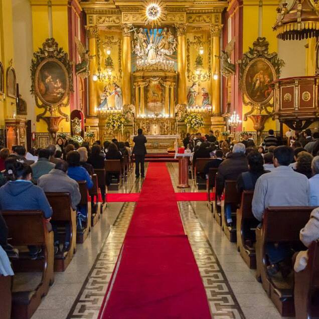

Iglesia del Sagrario de Lima
Es conocida mayormente con el nombre de "Parroquia El Sagrario" y se halla exactamente al lado de la Catedral de Lima.
Quien quiera visitar este templo católico, puede hacerlo yendo hasta la Plaza Mayor de Lima, ya que la iglesia forma parte de las inmediaciones de este importante espacio urbano; la Parroquia, celebra misas en el horario de lunes a sábado, a las 5 y 7 de p.m.; los jueves y sábados a las 7 de la mañana y los domingos en el horario de 9 a.m., 5 de la tarde y 7 de la noche.
CARACTERÍSTICAS

- A nivel arquitectónico, la Iglesia del Sagrario presenta una planta de cruz latina de una sola nave, sobre la cual se erige una bóveda de cañón y una cúpula sobre el crucero. Se sabe que la fachada de la iglesia ha pasado por al menos cinco modificaciones, y que, la última que ha llegado hasta nosotros, es una reconstrucción hecha por Emilio Harth-Terre, quien le devolviera a la iglesia su fachada original.
Interiormente, la Iglesia del Sagrario, comprende una serie de bellos retablos que, en conjunto con el Retablo Mayor, dan un total de seis. Sobre el Retablo Mayor, puede decirse, que aquel es de estilo neoclásico, y que es una obra de Matías Maestro construida en el siglo XIX. Otros Retablos de la colección de la iglesia son: el Retablo de San Cristóbal; el de San Miguel; el de Nuestra Señora del Carmen y el de Nuestra Señora de las Aguas.
CARACTERÍSTICAS
- A nivel arquitectónico, la Iglesia del Sagrario presenta una planta de cruz latina de una sola nave, sobre la cual se erige una bóveda de cañón y una cúpula sobre el crucero. Se sabe que la fachada de la iglesia ha pasado por al menos cinco modificaciones, y que, la última que ha llegado hasta nosotros, es una reconstrucción hecha por Emilio Harth-Terre, quien le devolviera a la iglesia su fachada original.
Interiormente, la Iglesia del Sagrario, comprende una serie de bellos retablos que, en conjunto con el Retablo Mayor, dan un total de seis. Sobre el Retablo Mayor, puede decirse, que aquel es de estilo neoclásico, y que es una obra de Matías Maestro construida en el siglo XIX. Otros Retablos de la colección de la iglesia son: el Retablo de San Cristóbal; el de San Miguel; el de Nuestra Señora del Carmen y el de Nuestra Señora de las Aguas.